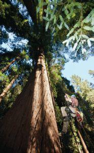
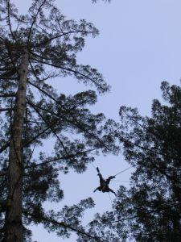
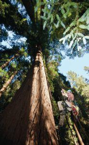
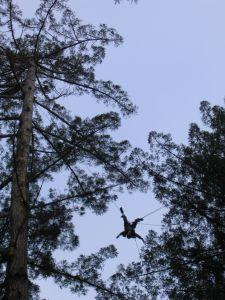

What's in the Collection?
The site contains over 515 carabiners displayed with photos, with many more in processing.
Click on any of the photos above to visit the pages for some of my favorites, and to get an idea of the collection.
By Category
See links below (or the buttons near the top of the page) to explore the collection directly by category. Or view All Carabiners in a single table.
- Triple-Action Twist Lock
- Twist Lock
- Slide Lock
- Screw Lock
- Other Locking
- Multi-Gate
- Non-Locking
- Gated-Hook
- Accessory Carabiners
Virtual Exhibits
For a focused look at parts of the collection Virtual Exhibits.
Gallery View
The more visually inclined, you may prefer to browse and navigate through an all-photo Gallery View.
Rest of the Stuff
Tools reflect the needs of their users, and changes in these tools reflect changes in recreation, rescue and work at height. I am mostly focused on locking carabiners or interesting design dead-ends. Check out the About page for more on the criteria guiding the collection.
Or see the Recent Updates section for the newest changes to the site.
Visit the Terminology Guide for information on the ways I've classfied carabiner features.
The Other Thoughts contains ramblings based on questions I've gotten when teaching about carabiners.


 



Why Carabiners?
I am fascinated by mechanical objects, how they are designed, and how those designs reflect the needs of the users. I also love the world of vertical rope disciplines - recreational tree climbing in particular, but I have also spent time professionally on ropes courses and teaching rock climbing.
As a gearhead, one thing I've always enjoyed is sharing gear with others, and seeing them understand an aspect of the rope discipline in a new way through that piece of equipment.
As a reader, I find simple personal websites interesting - something I've become nostalgic for as more content has moved to Web 2.0 and become hidden behind logins.
This site is an expression of my collecting and climbing hobby - a continual work-in-progress representing my personal collection & musings. It is not a how-to guide, or any sort of authority on how to use vertical equipment.
Please seek proper instruction, and consider my remarks on this site with the same level of seriousness as us having a casual discussion about carabiners over a pint.
I welcome any questions/comments/suggestions through this contact form.
-Sam
Donations?
Have some old carabiners you're interested making their way to the collection? Please contact me.
Many of these carabiners are donations from friends and strangers-turned-friends, and the collection wouldn't be what it is without the generous help of others.
I am also interested in old catalogs, magazines or other material that might aid my research.
Disclaimer, Information Quality & Future Plans
Climbing is Inherently Dangerous & Humans are Only Human.
Yup, this is a personal page and project, which I maintain for fun as a hobby. Again, how carabiners are used or misused can cause serious injury or death. The site certainly contains factual errors - please do not rely on information on this site to make choices about personal safety.
Data & Future Plans
Information about photos, cataloging methodology, and future plans can be found on the About page.
I hold and retain a copyright for this site's content, with the exception of catalog/magazine clippings & patents. That said, please contact me if you would like to use information or photos for a project. I am very open to sharing (just not with massive AI content scrapers).

Early Stages: the carabiners cataloged as of July 2022...